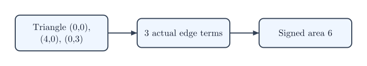
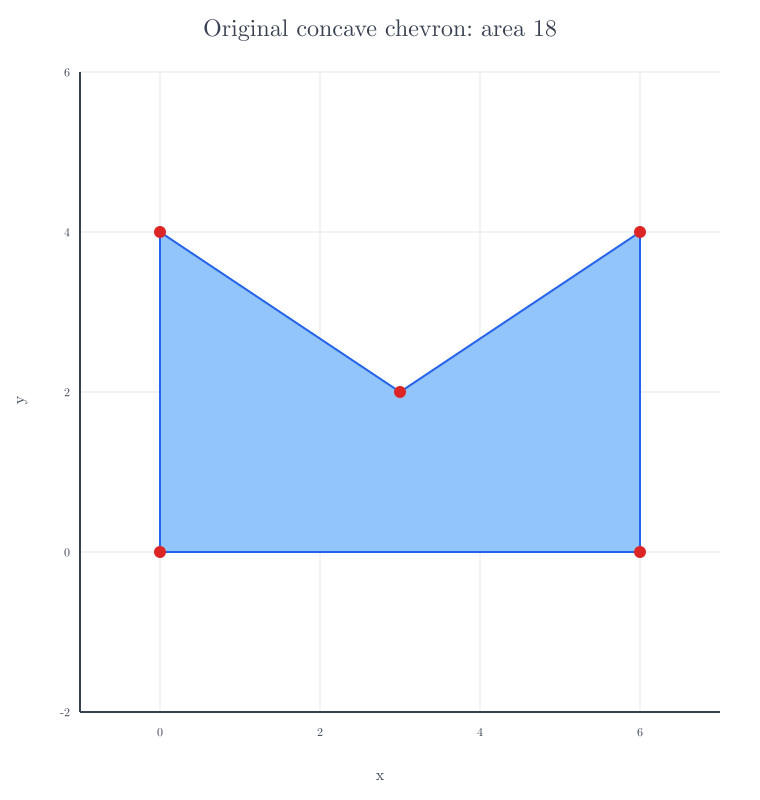
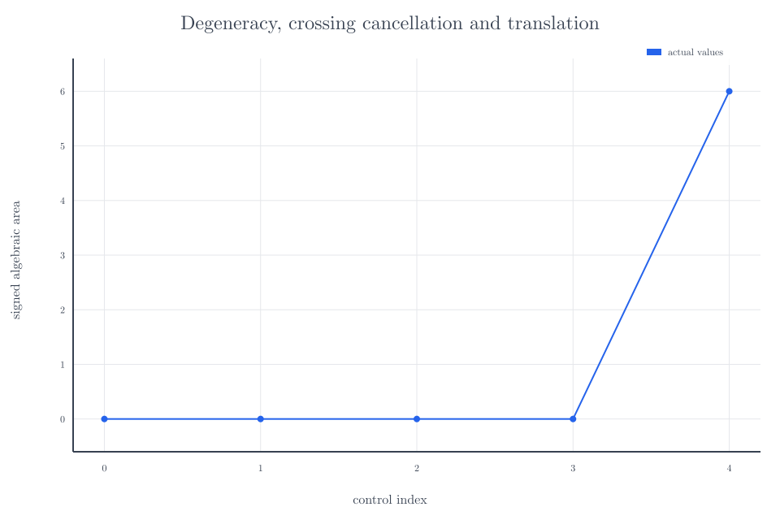
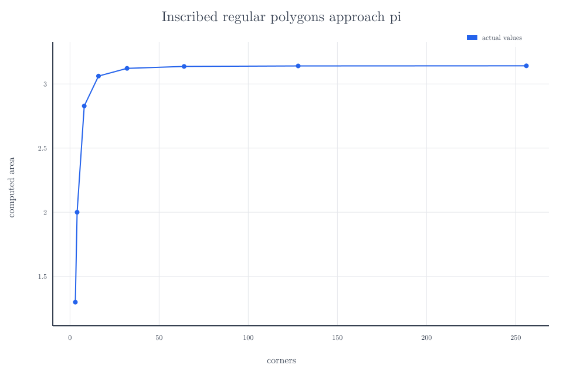

Shoelace area: edge sums and winding
Abstract
Given a closed polygonal boundary, compute its enclosed area from its corners without triangulating its interior. Directed edge determinants produce a signed area whose sign records winding for simple boundaries. We inspect actual compensated edge sums, retain the square, triangle and concave chevron, and test translation and regular-polygon limits.
Mechanism and mathematical scope
Green's theorem gives one half of the boundary integral \(x\,dy-y\,dx\). Parametrizing one straight edge reduces its contribution to the determinant of its endpoints:
Reversing the traversal reverses every edge and negates the sum. For a simple counterclockwise boundary the sign is positive; absolute value is its enclosed area. Self-crossings give algebraic area, not union area: oppositely wound lobes may cancel. Repeated first/last corners are permitted.
The native producer subtracts the first corner before evaluating determinants and uses compensated long-double summation. Translation invariance cancels analytically; anchoring reduces avoidable floating-point cancellation. It does not make an exact predicate, and the final double area can underflow. The edge table is the actual anchored computation, starting with the closing last-to-first edge. Time is linear, with constant working storage beyond optional linear history.
A tiny actual producing history
The table and native concept diagram read the same producing execution. Every block below is a complete editable C++ program.
#include <dm/dm.hpp>
int main() {
namespace a = dm::algorithms;
namespace g = dm::graphics;
std::filesystem::create_directories("build");
auto r = dm::geometry::shoelace_trace({{0, 0}, {4, 0}, {0, 3}});
std::print("| from | to | anchored determinant | signed partial area |\n| ---: | ---: | ---: | ---: " "|\n");
for (const auto &e : r.edges)
std::print("| {} | {} | {} | {} |\n", e.from, e.to, e.determinant,
e.signed_partial_area);
g::Diagram concept_diagram(48, 1100);
concept_diagram.node("n0", {0, 0}, "Triangle (0,0), (4,0), (0,3)");
concept_diagram.node("n1", {5, 0},
std::format("{} actual edge terms", r.edge_terms));
concept_diagram.node("n2", {10, 0},
std::format("Signed area {}", r.signed_area));
concept_diagram.edge("n0", "n1").edge("n1", "n2");
concept_diagram.save_svg("build/shoelace_tiny.svg");
}| from | to | anchored determinant | signed partial area |
|---|---|---|---|
| 2 | 0 | 0 | 0 |
| 0 | 1 | 0 | 0 |
| 1 | 2 | 12 | 6 |

The retained original experiment
#include <dm/dm.hpp>
int main() {
namespace a = dm::algorithms;
namespace g = dm::graphics;
std::filesystem::create_directories("build");
namespace geo = dm::geometry;
const std::vector<std::vector<geo::Point2D>> shapes{{{0, 0}, {1, 0}, {1, 1},
{0, 1}},
{{0, 0}, {0, 1}, {1, 1},
{1, 0}},
{{0, 0}, {4, 0}, {0, 3}},
{{0, 0}, {6, 0}, {6, 4},
{3, 2}, {0, 4}}};
std::print("| original shape | signed area | absolute area |\n| ---: | ---: | ---: |\n");
for (std::size_t i = 0; i < shapes.size(); ++i) {
auto r = geo::shoelace_run(shapes[i]);
std::print("| {} | {} | {} |\n", i, r.signed_area, r.area);
}
std::vector<double> x, y;
for (const auto &p : shapes.back()) {
x.push_back(p.x);
y.push_back(p.y);
}
auto plot = g::RPlot::create();
plot.polygon(x, y, {147, 197, 253}, true).polygon(x, y, {37, 99, 235}, false).points(x, y, {220, 38, 38}, 6).title("Original concave chevron: area 18").x_label("x").y_label("y").size(760, 800).margins(80, 40, 72, 88).x_limits(-1, 7).y_limits(-2, 6);
plot.save_svg("build/shoelace_original.svg");
}| original shape | signed area | absolute area |
|---|---|---|
| 0 | 1 | 1 |
| 1 | -1 | 1 |
| 2 | 6 | 6 |
| 3 | 18 | 18 |

Explicit controls
#include <dm/dm.hpp>
int main() {
namespace a = dm::algorithms;
namespace g = dm::graphics;
std::filesystem::create_directories("build");
namespace geo = dm::geometry;
const std::vector<std::vector<geo::Point2D>> inputs{{}, {{1, 2}},
{{0, 0}, {1, 1}, {2, 2}},
{{0, 0}, {2, 2}, {0, 2},
{2, 0}},
{{1e15, 1e15},
{1e15 + 4, 1e15},
{1e15, 1e15 + 3}}};
std::vector<double> x, y;
std::print("| control | signed area | terms |\n| ---: | ---: | ---: |\n");
for (std::size_t i = 0; i < inputs.size(); ++i) {
auto r = geo::shoelace_run(inputs[i]);
std::print("| {} | {} | {} |\n", i, r.signed_area, r.edge_terms);
x.push_back(i);
y.push_back(r.signed_area);
}
auto plot = g::RPlot::create();
plot.lines(x, y, "actual values", {37, 99, 235}).points(x, y, {37, 99, 235},
4).title(
"Degeneracy, crossing cancellation and translation").x_label(
"control index").y_label("signed algebraic area");
plot.save_svg("build/shoelace_controls.svg");
}| control | signed area | terms |
|---|---|---|
| 0 | 0 | 0 |
| 1 | 0 | 0 |
| 2 | 0 | 3 |
| 3 | 0 | 4 |
| 4 | 6 | 3 |

Actual selected work and sensitivity
#include <dm/dm.hpp>
int main() {
namespace a = dm::algorithms;
namespace g = dm::graphics;
std::filesystem::create_directories("build");
std::vector<double> x, y;
std::print("| regular unit-circle corners | actual area | analytic area | actual edge terms |\n| ---: | " "---: | ---: | ---: |\n");
for (std::size_t n : {3, 4, 8, 16, 32, 64, 128, 256}) {
auto r =
dm::geometry::shoelace_run(dm::geometry::shoelace_regular_polygon(n));
const double exact = n * std::sin(2 * std::numbers::pi / n) / 2;
std::print("| {} | {} | {} | {} |\n", n, r.area, exact, r.edge_terms);
x.push_back(n);
y.push_back(r.area);
}
auto plot = g::RPlot::create();
plot.lines(x, y, "actual values", {37, 99, 235}).points(x, y, {37, 99, 235},
4).title(
"Inscribed regular polygons approach pi").x_label("corners").y_label(
"computed area");
plot.save_svg("build/shoelace_work.svg");
}| regular unit-circle corners | actual area | analytic area | actual edge terms |
|---|---|---|---|
| 3 | 1.299038105676658 | 1.299038105676658 | 3 |
| 4 | 2 | 2 | 4 |
| 8 | 2.8284271247461903 | 2.82842712474619 | 8 |
| 16 | 3.0614674589207183 | 3.0614674589207183 | 16 |
| 32 | 3.1214451522580524 | 3.121445152258052 | 32 |
| 64 | 3.1365484905459393 | 3.1365484905459393 | 64 |
| 128 | 3.140331156954753 | 3.140331156954753 | 128 |
| 256 | 3.141277250932773 | 3.141277250932773 | 256 |

API and interpretation
Finite coordinates are required; the API does not test simplicity. Nonfinite or out-of-range area fails explicitly. The bow tie control has zero algebraic area despite nonempty lobes. Unit-circle regular polygons have analytic area n sin(2 pi/n)/2, approaching pi. No real dataset is needed for this geometric identity.
Reusable producers, fixtures and histories live in the canonical C++ library. Captured records own their values and do not come from a separate report replay. Selected counters and record/scalar policies are specified at their API boundaries; they are not peak-byte or wall-time budgets. Synthetic structural inputs are controlled fixtures for these mechanisms.
References
- Green theorem and signed polygon area derivation
Verified in the shared ten-document batch: 48 scoped native cases;20 directly
instrumented ASan/UBSan cases;77 executable public examples;252/252 full-file
definitions across21 scopes;10 hovers;1843 independent records/11127
checks;frozen comparisons across all ten families with translation-cancellation
and strict-parser corrections recorded;11 checkout/installed standalone headers
and linked ten-family consumer;40 executed programs and40 inspected figures with
both exports. Receipts: build/mepml-conversion/batch-354-363/.